Using Film
Film plays your match back over the video it was tagged against — every pass, tackle and shot placed on the exact second it happened. This page walks through everything it can do, in the order you are likely to need it. Nothing here needs installing, and nothing here can damage your data: Film never changes a tagged event, a line-up or a score.
Keep this tab open beside your match. It opened in a new tab on purpose, so the video you were watching is still where you left it.
Contents
01In one minute
If you read nothing else, read this.
| Do this | And this happens |
|---|---|
| Press Space | the match plays, or pauses |
| Press ← or → | you move two seconds back or forward |
| Click any row in the list on the right | the video jumps to that moment |
| Press F | the match fills the screen — this is where the analyst tools live |
| Right-click the picture (in full screen) | the analyst menu opens: draw, spotlight, cut a clip, export |
| Press Esc | you come back out of full screen |
Everything else on this page is detail on those six lines.
02What is on the screen
Film is six things arranged around one video.
1 · The half buttons
Above the video: 1st Half and 2nd Half. They only appear when the match has both halves marked up.
2 · The picture
The match video. Clicking it does nothing, on purpose — you are watching a moving passage of play, and a mis-click that stopped it would cost you your place. Use Space to play and pause.
3 · The caption strip
The dark band along the bottom of the picture. It shows the entry happening right now — for example 18 pass success 9 pass success 14. The home team is written from the left edge, the away team from the right edge, so you can tell which side did what before you have read a single word.
4 · The transport bar
Under the picture: the play button, the scrub bar, and the clock.
The clock is match time, not video time. It reads
00:00 at kick-off and 45:00 at the start of the second
half, whatever point of the video file that actually is. So if you switch to the
second half and see 45:00 / 90:00, that is correct.
5 · The pitch map
Top right. A scale pitch showing where on the grass the current action happened.
6 · The filters and the event list
The right-hand column: three filters across the top, then every tagged entry of this half in time order.
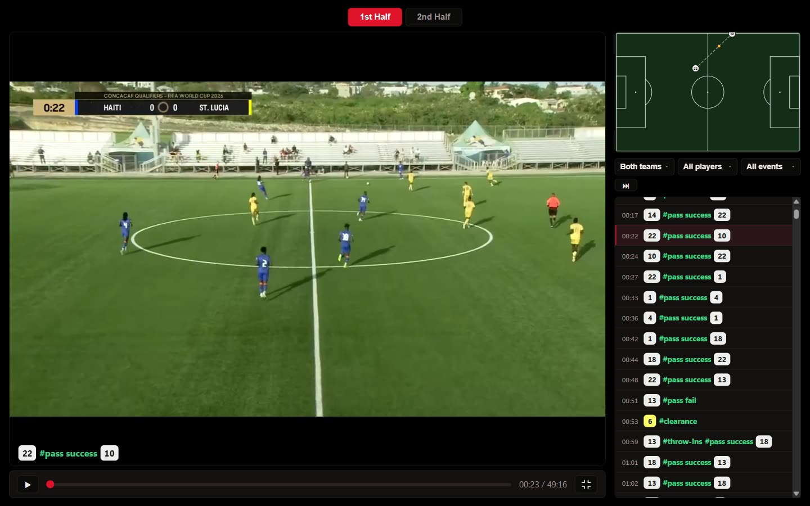
123456- Half buttons: choose 1st or 2nd half.
- The picture: clicking it does nothing, on purpose.
- Caption strip: the entry happening right now.
- Transport bar: play, scrub bar and clock.
- Pitch map: where this action happened.
- Filters, with every tagged entry of this half below them.
03Playing the match
- Press Space to start. Press it again to pause.
- Press ← to go back two seconds, → to go forward two seconds. Hold the key down to keep moving.
- To jump somewhere: click anywhere on the scrub bar, or press and drag the round handle along it.
- The play button beside the bar does the same as Space, for when you would rather use the mouse.
Two things worth knowing
- You cannot leave the half you are in. The bar covers the first half only, or the second half only, and the video is held inside it. That is why it fills up over 45-odd minutes rather than over the whole file.
- Space works wherever your mouse is, as long as you are not typing in a box. If a filter panel is open and your cursor is in it, Space ticks the box under it instead — press Esc to close the panel and Space is the video's again.
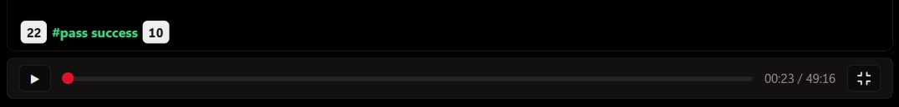
1234- Play or pause. Space does the same.
- Scrub bar: click or drag to jump.
- The match clock, not the clock of the video file.
- Full screen. F does the same.
04The two halves
The match is one video file, but Film treats each half as its own window.
- Click 2nd Half above the picture.
- The video jumps to the second-half kick-off, the clock resets to
45:00, and the event list refills with the second half's entries. - Click 1st Half to go back.
If you only see one button, or none: that match was submitted without both halves marked. Film then plays the whole file in one window labelled Full Match. Everything else on this page still works.
What you keep and what you lose when you switch: your three filters stay exactly as you set them. Your place in the half you were watching does not — switching half is a deliberate move to somewhere else. Any drawings you made are kept, and are still on the frames they belong to.
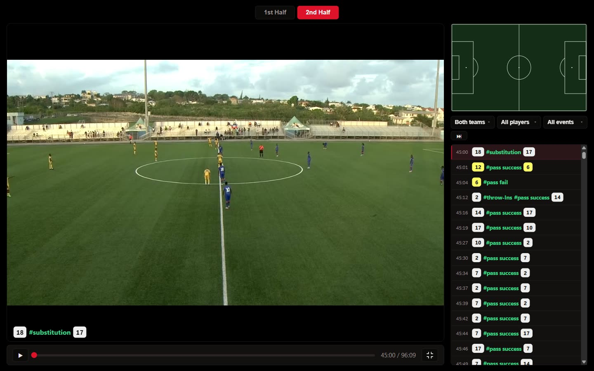
12- The half you are watching is shown in red.
- The clock carries on from 45:00. This is correct.
05Showing only what you want
Three filters sit above the event list: Both teams, All players, All events. They are not drop-downs — each opens a list of tick boxes, and you can tick as many as you like. That is the point: "9 and 14" is a question a drop-down cannot ask.
- Click All players. A panel opens.
- Tick 9, then tick 14. The list narrows as you tick — the panel stays open.
- The button now reads 2 players. Tick one only and it reads 9; tick none and it goes back to All players.
- Click somewhere else, or press Esc, to close the panel.
- To clear it, open it again and tick All players at the top of the list.
Rules that save you time
- The three filters combine. Team and player and event, all at once. Saint Lucia + 9 + pass fail is one question.
- Ticking everything is the same as ticking nothing. Film normalises it back to "all", so the button and the list can never disagree.
- The options are this half's. The player list holds the numbers that touched the ball in this half — plus whatever you currently have ticked, so a pick is never silently dropped when you change half.
- An empty list is a real answer. No events match this filter. means exactly that: he did not do that in this half.
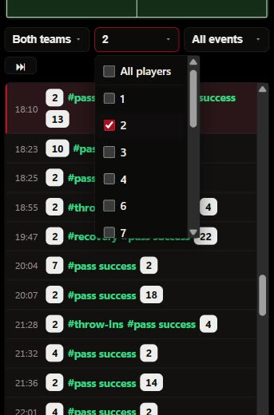
12- Open a filter by clicking its button.
- Tick as many as you want. The list and the video follow at once.
06The event list
Every tagged entry of this half, in the order it happened.
Reading a row. The time on the left is match time. The rest is the entry as it was typed: 18 recovery pass success 4 is one thing that happened — number 18 won the ball and passed it to number 4 — not two separate touches. Shirt numbers are coloured by side.
- Click a row and the video jumps to that moment. The row lights up as the video reaches it, so you can also just watch the list scroll itself.
- The ⏭ button beside the filters jumps to the next entry that matches your filters and starts playing, landing two seconds early so you see the build-up rather than the result.
- Filter to 9 + shot, then press ⏭ repeatedly, and you have a shot reel for number 9 without cutting anything.
Why an entry holds the screen for longer than an instant: a pass has a beginning and an end, and Film shows it for its whole flight. A clearance or an aerial duel has no span at all, so it is held on screen for about a second instead. That is why some captions linger and others flick past.
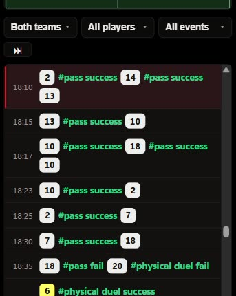
1234- Match time of the entry. Click a row to jump there.
- Shirt number of the player.
- What happened. The red row is the one playing now.
- Jump straight to the next entry.
07The pitch map
The pitch in the top right is a scale drawing of the real one, and every dot is where the action actually happened — the position the analyst marked while tagging, not an estimate.
- A dot is a touch. Its colour is the side that made it.
- A line between two dots is a pass or a cross: where it was struck, and where it arrived.
- The moving dot is the ball, travelling between the two along that line, in step with the video.
The pitch does not move with the camera. The camera pans and zooms; the pitch stays a pitch. That is what makes it readable — a wide switch of play looks like a wide switch of play, even when the broadcast cannot fit both touchlines in the frame.
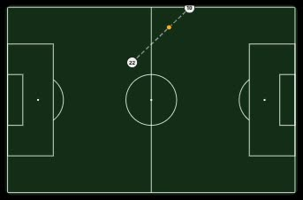
08Full screen
This is the important section on this page, because it is the door to everything in the three sections after it.
- Click the ⛶ button at the right-hand end of the transport bar, or just press F.
- The match fills the screen. Everything is still there — the picture, the caption, the pitch, the filters and the list — just bigger, sized so a shirt number can be read from the back of a meeting room.
- Press Esc, or F again, to come back.
Two things only exist in full screen
- the right-click analyst menu, and everything it opens
- the frame-by-frame, drawing, clip, tag and export keys — see section 17 for all of them
Outside full screen those keys do nothing at all. That is deliberate: at normal size the picture is about 1300 pixels wide, and drawing an accurate offside line across a player 40 pixels tall is not serious work.
The Guidelines link is hidden while you are in full screen — the projector room is not for reading. Read here first, then press F.
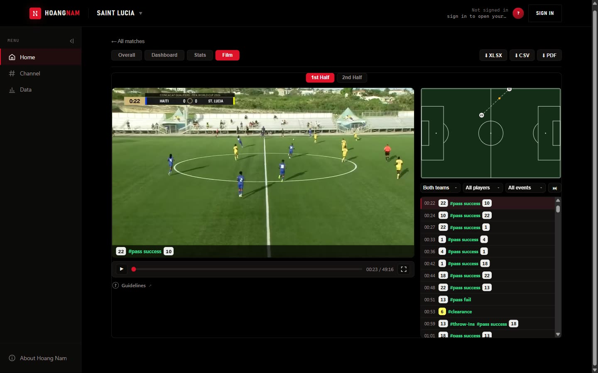
12- Full screen button. F does the same.
- Guidelines: opens this page in a new tab.
09The analyst tools
Go full screen, then right-click anywhere on the picture. A menu opens at the point you clicked — and that matters, because half of what is in it means "do something here".
The video does not stop when the menu opens. That is on purpose, and it is why every drawing you create from the menu is anchored to the frame you right-clicked on, not to wherever the match has run on to while you were reading. Tools that need the players to stay still (linking, measuring, freezing) hold that frame for you when you choose them.
The menu, top to bottom
| On the menu | What it does | Key |
|---|---|---|
| 12:34 · 1st Half | the moment you right-clicked. The chip beside it, Event: #6, is the player of the tagged event at that moment | |
| The row of six buttons | one frame back, play / pause, one frame forward, playback speed, loop the next 8 seconds, darken everything except the spotlights. Rest the mouse on one to see its name | , Space . L D |
| Spotlight & track player | a ring and a beam of light on this spot. It can follow the player — section 12 | S |
| Link players | join players with a line or a shape — section 12 | K |
| Defensive line | a line through a unit, run out to the edges of the picture — section 12 | N |
| Measure ▸ | distance, width, depth and area on the pitch — section 13 | M |
| Draw ▸ | the drawing tools — next section | |
| Freeze here & draw | holds this frame and arms the arrow. Whatever you draw also stops the exported film here for 3 seconds | Q |
| Zoom in here (or use the wheel) | zoom into this spot. Reset the zoom returns to full size | |
| Drawing here: … ▸ | only appears if you right-clicked on top of a drawing — see section 11 | |
| The row of five tiles | Split the clip here, mark clip In and Out, save a clip ±6 s around the nearest tagged event, change the Speed of a stretch — section 14 | X [ ] A V |
| Open clip editor | the timeline for the clip you are on — section 14 | E |
| Clip list… | your clips, and the tags of this match | C |
| Tag this moment | give this stretch a code, labels and a note — section 15 | G |
| Add to playlist ▸ | file this stretch under a named playlist — section 15 | |
| Export ▸ | save this frame as a picture, or render the marked section to a video — section 16 | |
| Copy a link to this moment | copy a link that reopens the match at this second | |
| Drawings · Timeline · Exit | hide or show every drawing, hide or show the timeline above the picture, leave full screen | H T Esc |
The inspector
Choosing a tool opens a panel beside the picture holding everything about the thing you are working on: its colour, its size, how long it stays, whether the export stops on it. It never covers the pitch or the event list. If it is in your way on the picture, drag it by its title. Done or the × closes it.
Backing out of anything: press Backspace. It closes the innermost thing first — the menu, a half-drawn shape, a link you are clicking out, the spotlight you are positioning, the armed tool, the inspector, the clip editor, then the clip list. Press it a few times and you are back to plain playback.
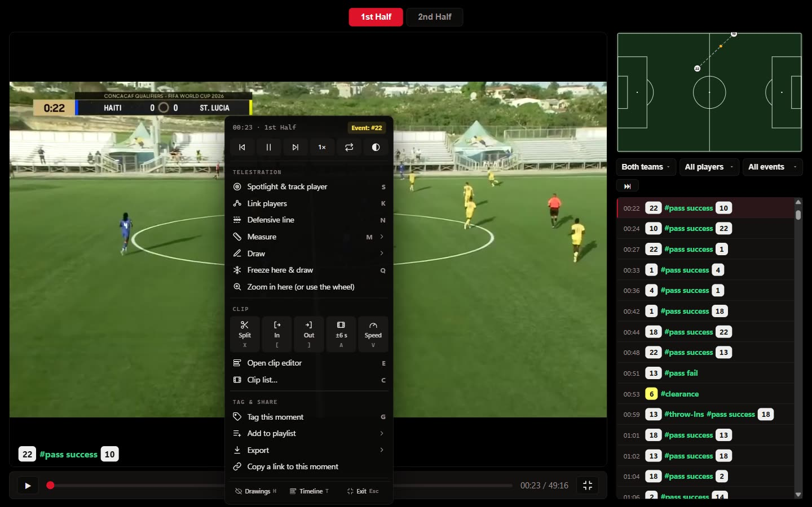
123456- The moment you clicked, and the player of the tagged event at that moment.
- Frame back, play or pause, frame forward, speed, loop, darken.
- Telestration: spotlight, link, measure, draw, freeze, zoom.
- Clip: split, mark in and out, clip around an event, speed, the editor.
- Tag & Share: tags, playlists, export and link.
- Hide or show drawings and the timeline, or leave full screen.
10Drawing on the frame
Choose a tool from Draw, then drag on the picture. The tool stays armed until you press Backspace, so you can draw several arrows without going back to the menu each time.
| On the menu | What you get | How to draw it |
|---|---|---|
| Arrow | a straight arrow | drag from start to end |
| Curved arrow | a curved arrow | drag; the curve is drawn for you |
| Dashed arrow (run without the ball) | a dashed arrow — the convention for a run made without the ball | drag |
| Freehand | a freehand line | draw as if with a pen |
| Zone (half-space, pocket) | a shaded area — a half-space, a pocket, a zone left open | drag out a box |
| Text | a text label | click, type, press Enter |
| Player marker | a ring around a player | click on him |
Two more entries at the bottom of the same submenu: Undo the last shape undoes the last one, Clear all drawings removes them all.
The spotlight — the one you will use most
- Press S (or choose Spotlight & track player). A ring and a beam of light appear, and the inspector opens.
- Drag it so the ring sits at the player's feet. It stays in positioning mode, so you do not have to start again.
- Roll the mouse wheel, or use Size, to make it bigger or smaller.
- Pick the Style: Ring, Beam, Ring + beam, Arrow head or Circle. Type a Label such as #6 to put a name tag on it.
- Press D to darken everything outside it. Press D again to lift the darkness.
Changing a drawing after you have made it
Click its bar on the timeline, or right-click on top of it and choose Select to edit. The inspector opens with everything about that one shape. The group Drawing here: … in the menu does the same jobs without the panel: how long it lasts, keep it up for the whole clip, freeze the frame on it when exporting, change its colour, or delete it.
With a drawing selected: Delete removes it, Shift + ← / → slides it one frame earlier or later. U undoes the last shape you drew.
Where your drawings are kept. In this browser, on this computer, against this match. They survive closing the tab and coming back. They are not uploaded and not shared — a colleague opening the same match on their own machine sees a clean picture.
To hand a drawing to somebody, export it: a .png of the frame, or an .mp4 of the clip with the graphics burned in.
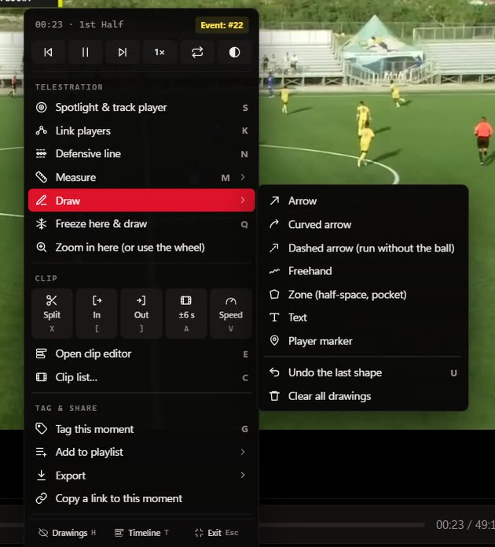
12- Rest the mouse on Draw.
- Pick a tool, then drag on the picture.
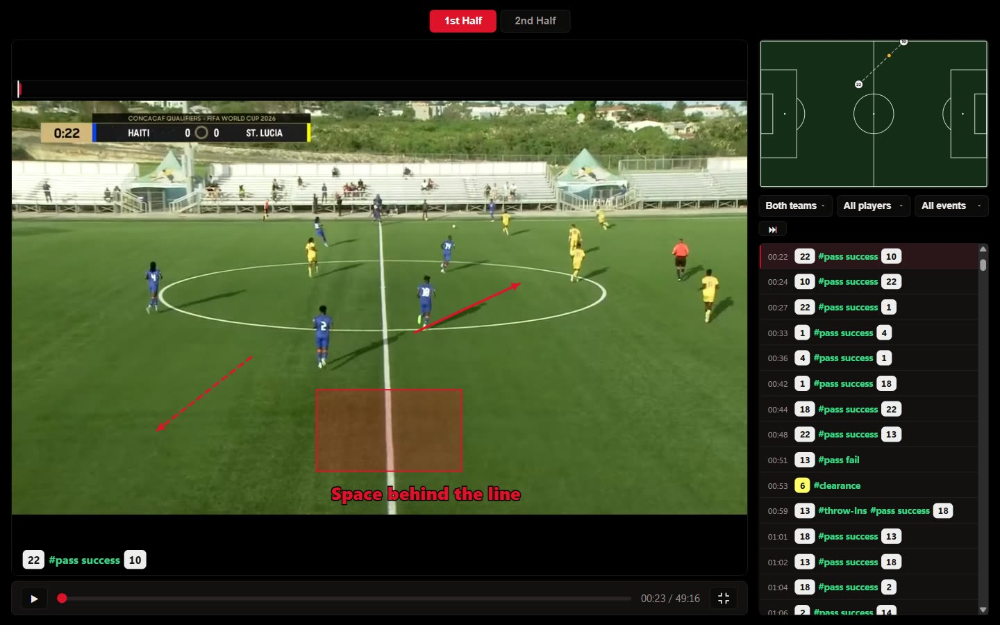
1234- Arrow: a pass.
- Dashed arrow: a run without the ball.
- Zone: an area to look at.
- Text: a label in your own words.
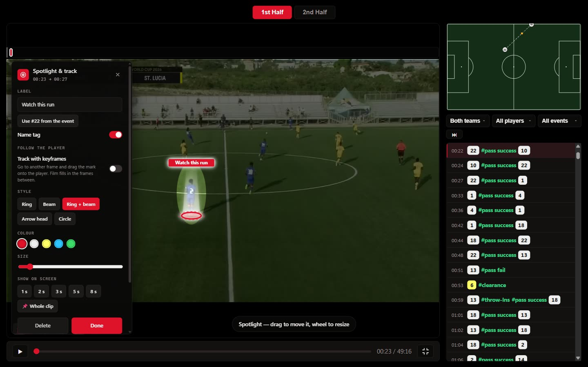
1234- The ring goes at the feet of the player. Drag it there.
- Label: the name tag above the player.
- Style: ring, beam, both, arrow head or circle.
- Size. The mouse wheel does the same.
11How long a drawing stays
A drawing belongs to the moment it was made on, not to the whole match. Draw an arrow on the 12th minute and it is not still hanging there in the 60th.
Press T and a thin lane appears above the picture, with one bar per drawing sitting at the stretch of time it is alive for. That lane is the whole feature made visible.
- Press T to show the lane.
- Click a bar to select that drawing. (Right-clicking the drawing itself and choosing Select to edit does the same.)
- Press a number 1–9 to set how many seconds it lasts. Do this with nothing selected and it becomes the default for the next shape you draw.
- Press 0 to keep it up for the whole clip. Press 0 again to release it.
- Shift + ← / → slides it one frame at a time until it sits exactly on the touch you mean.
- Press T again to hide the lane. Hiding the lane does not change any drawing.
Drawings made on the same moment have bars on top of each other, and only the top one can be clicked. To reach one underneath, right-click the drawing itself on the picture and choose Select to edit.
Freeze frame on export (in the Drawing here group) is a different kind of duration: it holds the video still on that drawing for 2 to 5 seconds in the exported file only, so the coach watching the .mp4 gets time to read it. It changes nothing about how the clip plays here.
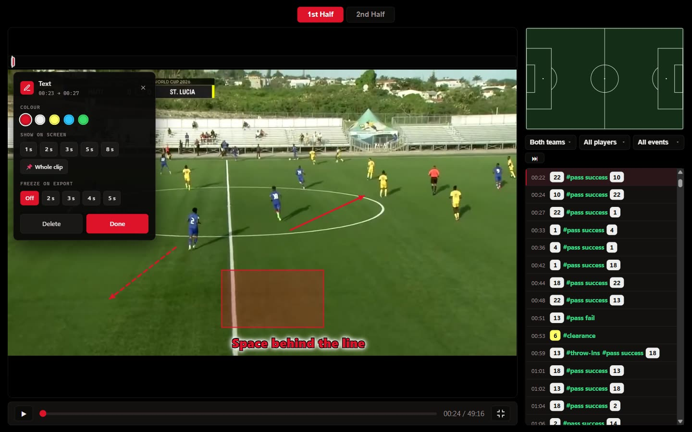
1234- The timeline: one bar for each drawing, across the whole half.
- The selected drawing has a white outline.
- Show on screen: how long it stays.
- Freeze on export: holds the picture in the exported file only.
12Following players
A spotlight that follows a player
Film does not know where the players are. You show it, on a few frames, and it fills in the frames between. These points are called keyframes.
- Put a spotlight on the player, and turn on Track with keyframes in the inspector.
- Go forward a second or two, with . or by playing and pausing.
- Drag the ring back onto the player. That adds a keyframe, and the ring now glides between the two points.
- Repeat until the run is covered. A straight run needs two or three keyframes; a player who changes direction needs one at each turn.
- Use Show on screen to set how long it stays. Moving the ring past the end of that time carries the end along with it.
The ◀ and ▶ buttons beside the keyframe count jump between them, and ✕ removes the one on the current frame. Everything you see here is what the exported file shows.
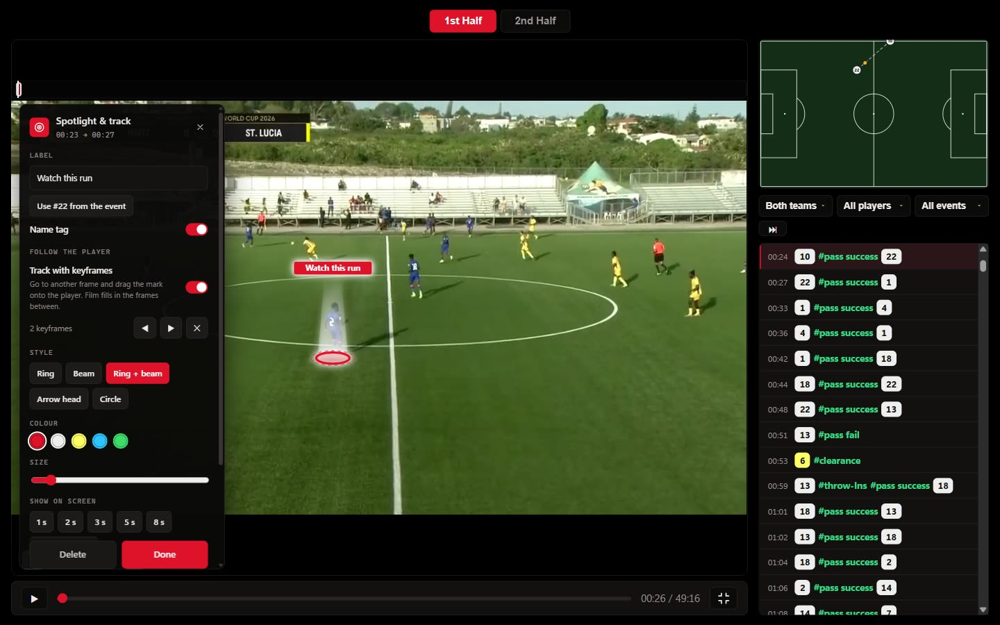
1234- Turn this on first.
- How many places you have set so far.
- Drag the ring onto the player on each new frame.
- Jump between keyframes, or remove the one on this frame.
Linking players
- Press K or choose Link players. The frame is held.
- Click each player on the picture, in order, then press Finish.
- Choose the Mode: Chain (a line from player to player), Defensive line (one line through the first and the last player, run out to the edges of the picture) or Shape (a shaded block).
- Choose the colour and the Line: Solid, Dashed or Arrows.
Drag any ring to move that player's point. In the inspector, click a numbered square to remove that player, or + Add players to carry on clicking. Track with keyframes works the same way as for the spotlight, so a whole line can move with the unit. N starts directly on Defensive line.
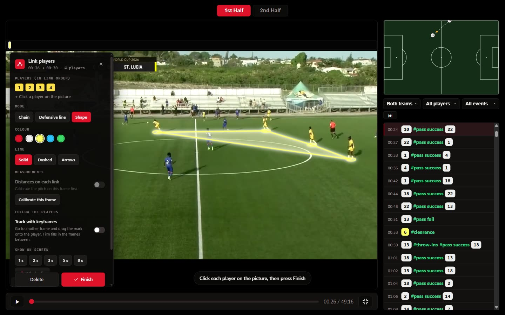
1234- The shape follows the order you clicked in.
- One square for each player. Click a square to remove that player.
- Mode: chain, defensive line or shape.
- Finish when you have clicked them all.
13Measuring on the pitch
To turn pixels into metres, Film needs to know how the pitch sits in the picture. You tell it by naming four pitch markings. This is called calibrating.
- Stop on the frame you want to measure and press M.
- Click four pitch markings you can name: corners of the penalty box, the penalty spot, where the halfway line meets the touchline. Spread them out, and do not put three in a line.
- For each point, pick from the list which marking it is. “Far” is the touchline away from the camera, “near” the one closest to it.
- If your pitch is not 105 × 68 m, type its real size. Then press Apply.
- Choose Distance, Width (across the pitch) or Depth (along it) and drag between two points. For Area, click the corners and press Finish area.
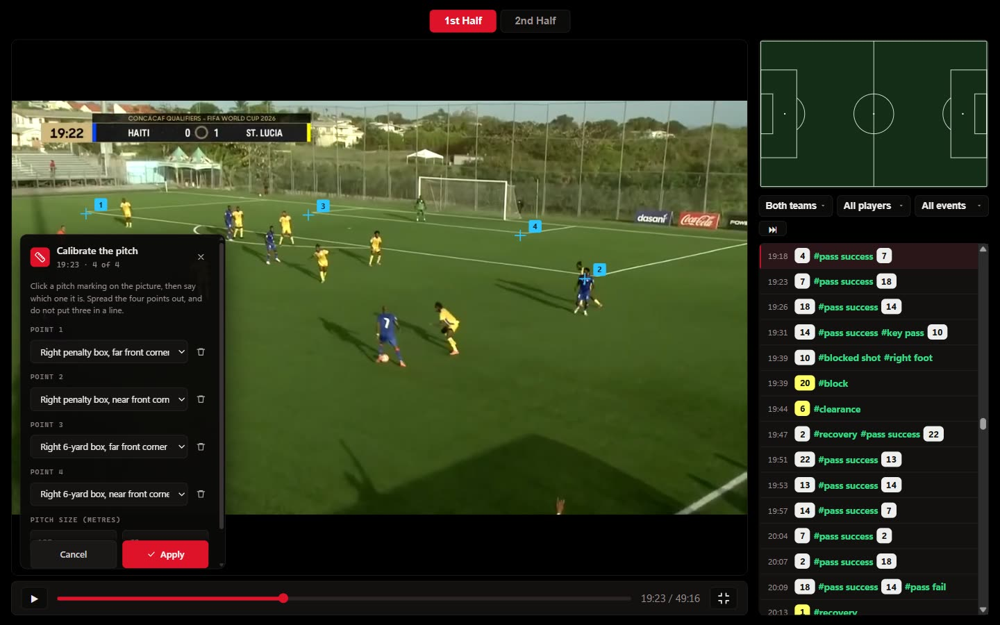
1234- Click a marking you can name, here a corner of the penalty box.
- Spread the four across the picture.
- Say which marking each point is.
- Apply once all four are named.
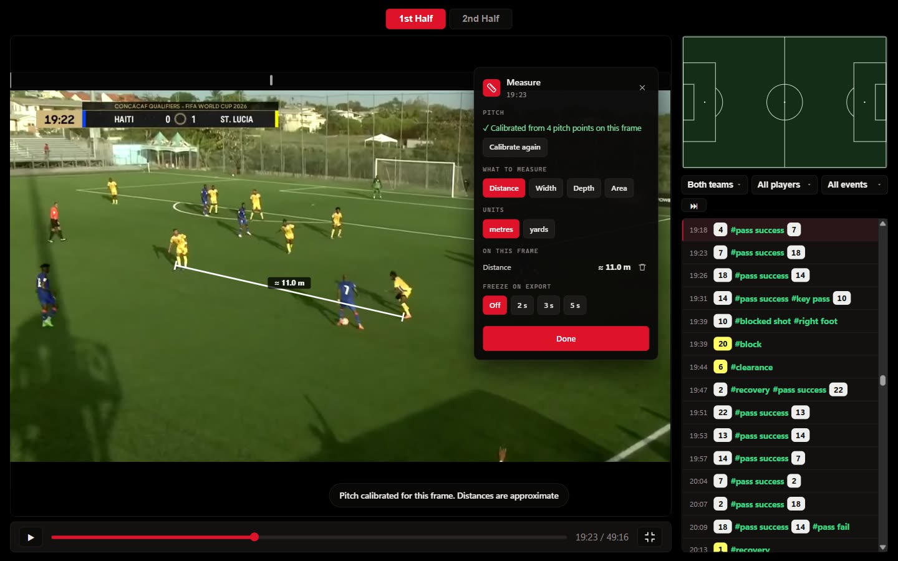
1234- The result, on the picture. ≈ means approximate.
- Green means this frame is calibrated.
- Choose Distance, Width, Depth or Area.
- Everything measured on this frame.
Every figure is approximate, which is why it carries a ≈. The result depends on how exactly you clicked, on the pitch markings really being where the laws say, and on the player's feet being on the ground.
A calibration belongs to one camera position. Broadcast cameras pan all the time, and Film cannot tell when they have. More than a second away from the frame you calibrated, it asks you to calibrate again. If the camera really has not moved, press Camera hasn’t moved.
On a link, turn on Distances on each link to label every gap, plus the width and depth of the unit. It needs a calibrated frame, and the figures show only within a second of it.
14Clips and the clip editor
A clip is a start time and an end time. Nothing is copied and nothing is re-encoded until you actually ask for a file, so making clips costs nothing.
Three ways to make one
| How | Best for | |
|---|---|---|
| Mark the ends | press [ where it should start, ] where it should end | a passage you are watching now |
| Around an event | press A, or the ±6 s tile in the menu | goals, shots, turnovers — anything already tagged |
| From the list | click the row, then press [, play on, press ] | working down a filtered list |
The clip saves itself the moment both ends exist. Press [ and ] the wrong way round and Film swaps them for you.
The clip list
Press C. A drawer opens showing Clips (n) and one row per clip.
| Control | What it does |
|---|---|
| ▶ Play all | play every clip in order, back to back — your team meeting, in one press |
| ▶ on a row | play that clip |
| ✎ on a row | open that clip in the clip editor |
| ⬇ on a row | render that clip to an .mp4 on your computer, graphics included |
| ✕ on a row | remove that clip from the list |
| ✕ in the header | close the drawer |
Press C again, or Backspace, to close it.
Clips are kept the same way drawings are: in this browser, against this match, not uploaded and not shared. To give somebody a clip, download it with ⬇ and send them the file.
The clip editor
Press E on a clip, or anywhere in the match to make a clip around the moment you are on. A timeline opens under the picture, and your original video is never touched: all of this is a recipe that only takes effect when you export.
| Tool | What it does | Key |
|---|---|---|
| Split | cut the segment in two at the red playhead, so each part can have its own speed | X |
| Delete | remove the selected segment, caption or freeze. The film jumps over a removed segment | Delete |
| Speed | pick the segment under the playhead, then choose 0.25× to 2× in the inspector | V |
| Freeze | hold the frame under the playhead, for 3 seconds unless you change it | Q |
| Text | add a caption from the playhead. Type it in the inspector, and choose Top, Middle or Bottom | Y |
| Transition | go into the selected segment with a straight cut or a fade through black | |
| Undo | take back the last change in the editor | U |
| Preview | fold the panels away and play the clip from its start, as the file will come out | P |
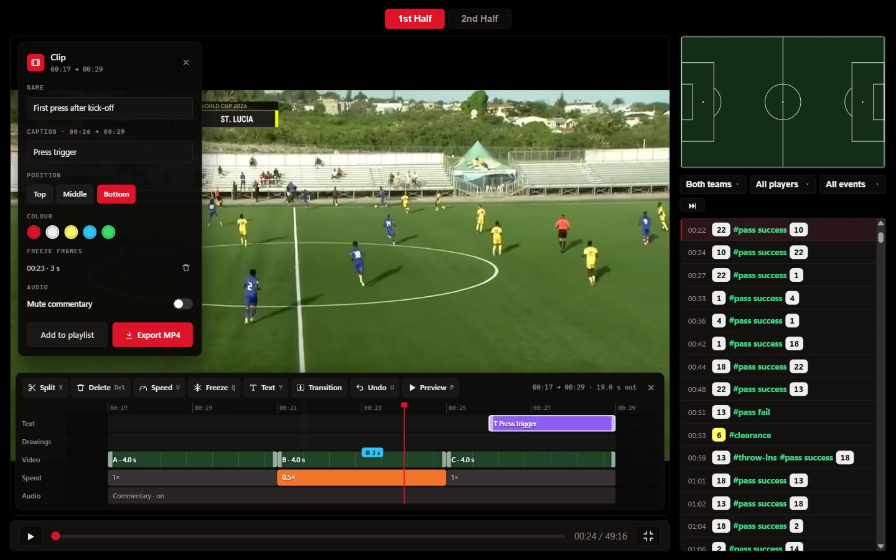
123456789- The tools. Each shows its key.
- The ruler: click or drag to move the playhead.
- One segment. Drag its white ends to trim.
- A segment slowed to 0.5×.
- A freeze: the picture holds here.
- A caption. Drag it to move it.
- How long the exported file will run.
- Preview, as the file will come out.
- Render the file.
- Click or drag the ruler along the top of the timeline to move the playhead.
- Drag the white ends of a segment to trim it, and of a caption to change how long it stays. Drag the middle of a caption to move it.
- [ and ] set the start and the end of the whole clip to the playhead.
- Space plays with every speed, freeze, cut and fade applied.
- Mute commentary silences the sound in the preview and in the file.
- The figure at the top right is how long the exported file will run.
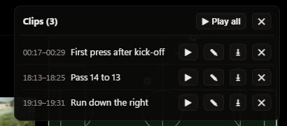
12345- Play every clip in order.
- Play this clip.
- Open it in the clip editor.
- Render it to an .mp4 on your computer.
- Remove it from the list.
16Taking work out of the app
A picture — Save this frame (.png)
Saves the frame you are on, at the video's own resolution, with your drawings on it. Instant. This is the one to use for a slide, a WhatsApp message, or a report.
A video — Download the marked section (.mp4)
Renders the marked section — or the ⬇ button renders one clip from the list, or Export MP4 in the clip editor — into a real video file with the graphics, speeds, freezes, captions and fades burned in, saved to your computer.
- It is not instant. Rendering takes as long as the finished file runs: a 12-second clip slowed to half speed takes about 24 seconds. Only one clip renders at a time.
- Nothing is uploaded. The file is built in your browser and written straight to your disk. It never touches our servers.
- Keep the tab visible while it renders. Some browsers slow hidden tabs down.
- Use Chrome or Edge for .mp4. Firefox can only produce .webm, and Film tells you so before it starts. A .webm plays fine on a computer but is awkward to put into PowerPoint.
A link — Copy a link to this moment
Copies a web link pointing at the exact second you are on. Whoever opens it lands on this match, on the Film tab, at that second. Paste it into an email or a message the way you would any other link.
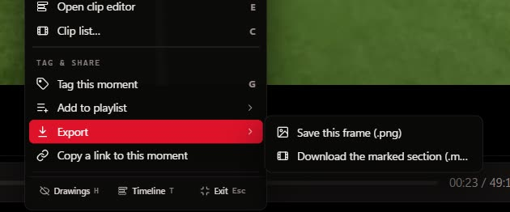
1234- Rest the mouse on Export.
- A picture of this frame.
- A video file of the marked section.
- A link to this second of the match.
17Every keyboard shortcut
Anywhere in Film
| Key | Does |
|---|---|
| Space | play / pause |
| ← → | back / forward two seconds |
| F | full screen on / off |
| Esc | leave full screen |
In full screen only — the analyst tools
| Key | Does |
|---|---|
| , . | one frame back / forward |
| S | spotlight where the mouse is |
| K | link players |
| N | defensive line |
| M | measure, calibrating first if this frame needs it |
| Q | hold this frame and draw; the export stops here too |
| G | tag this moment |
| U | undo the last shape |
| A | save a clip ±6 seconds around the nearest event |
| E V | open the clip editor here |
| X | open the clip editor and split here |
| D | darken everything else |
| H | hide / show all drawings |
| T | show / hide the drawing timeline |
| L | loop the next 8 seconds |
| [ ] | mark clip start / end |
| C | open / close the clip list |
| 1–9 | how many seconds the selected drawing lasts |
| 0 | keep / release the selected drawing for the whole clip |
| Delete | delete the selected drawing |
| Shift ← → | move the selected drawing one frame |
| Backspace | close the innermost thing that is open |
In the clip editor
| Key | Does |
|---|---|
| Space | play with every edit applied |
| P | preview from the start, with the panels folded away |
| X | split at the playhead |
| V | select the segment under the playhead, to change its speed |
| Q | freeze the frame under the playhead |
| Y | add a caption |
| [ ] | start / end of the clip at the playhead |
| Delete | remove the selected segment, caption or freeze |
| U | undo |
In the tag panel
| Key | Does |
|---|---|
| 1–9 | pick that code |
| Enter | save the tag |
Mouse
| Action | Does |
|---|---|
| left-click the picture | nothing — deliberately |
| right-click the picture (full screen) | open the analyst menu here |
| wheel over the picture (full screen) | zoom in and out — or resize the spotlight you are positioning |
| Ctrl/Cmd + wheel | your browser's own zoom, untouched |
| drag on the picture | draw, once a tool is chosen |
| drag the title of the inspector | move it out of the way |
| click or drag the scrub bar | jump there |
| click a row in the list | jump to that entry |
18If something does not work
| What you see | Why | What to do |
|---|---|---|
| No video for this match. | the match was tagged against a file on the analyst's own computer, so there is no shared video to play | everything else — Overall, Dashboard, Stats, the report — still works. Ask your analyst to publish the video with the match |
| Right-click does nothing | you are not in full screen | press F first. The analyst tools only exist in full screen |
| Space scrolls instead of playing | your cursor is in a filter panel | press Esc to close it |
The clock says 45:00 and I expected 00:00 | that is match time, and you are in the second half | correct behaviour — see section 2 |
| Right-click on the picture itself | you right-clicked the black bar, not the picture | right-click on the grass |
| This browser can only make .webm | Firefox cannot write MP4 | use Chrome or Edge for .mp4 |
| The video host has not enabled CORS… | the video host is not yet sending the header the renderer needs | tell us — it is a one-line setting on our side, not something you can fix. The .png export and everything else are unaffected |
| Tags and playlists need you signed in to this channel | you are reading a public channel, or are not a member of this one | sign in with the account that belongs to the channel. Everything else in Film still works |
| Could not save the tag… | the connection dropped, or the tag could not be stored | your form stays open with your note in it. Check the connection and press Save tag again |
| Those four points do not fix the pitch | three of the points are in a line, or too close together | choose markings spread across the picture |
| The camera may have moved | you are more than a second from the calibrated frame | calibrate again, or press Camera hasn’t moved |
| That clip is in the other half | the editor works inside one half at a time | switch half first |
| A click puts a point on the picture instead of doing nothing | a link, an area or a calibration is still waiting for clicks | press Finish, or Backspace |
| A drawing I made yesterday is gone | drawings live in the browser you made them in | they do not follow you between computers, or into a private window |
Anything not on this list: send us the match, the half, and the clock reading.
19What Film does not do
Said plainly, so nobody spends an afternoon looking for it.
- It does not follow players by itself. Every dot, every spotlight, every arrow is somewhere a person pointed. A tracked ring goes where your keyframes put it and nowhere else. Automatic tracking is a different class of product and needs tracking data, not a feature.
- Its measurements are estimates. Good for “about nine metres”, not for settling an offside.
- It does not share your drawings or clips. They are kept in your own browser. Tags are the one thing kept with the channel. Export is how everything else leaves.
- It does not change the match. Nothing you do here can alter a tagged event, a line-up or a score.
- It does not edit the source video. The clip editor is a recipe for the exported file. It cannot join two matches, reorder segments or record a voice-over, and a playlist plays one match at a time for now.
- The analyst tools need a real screen. Playback, filters and the list are fine on a tablet; drawing needs a mouse.